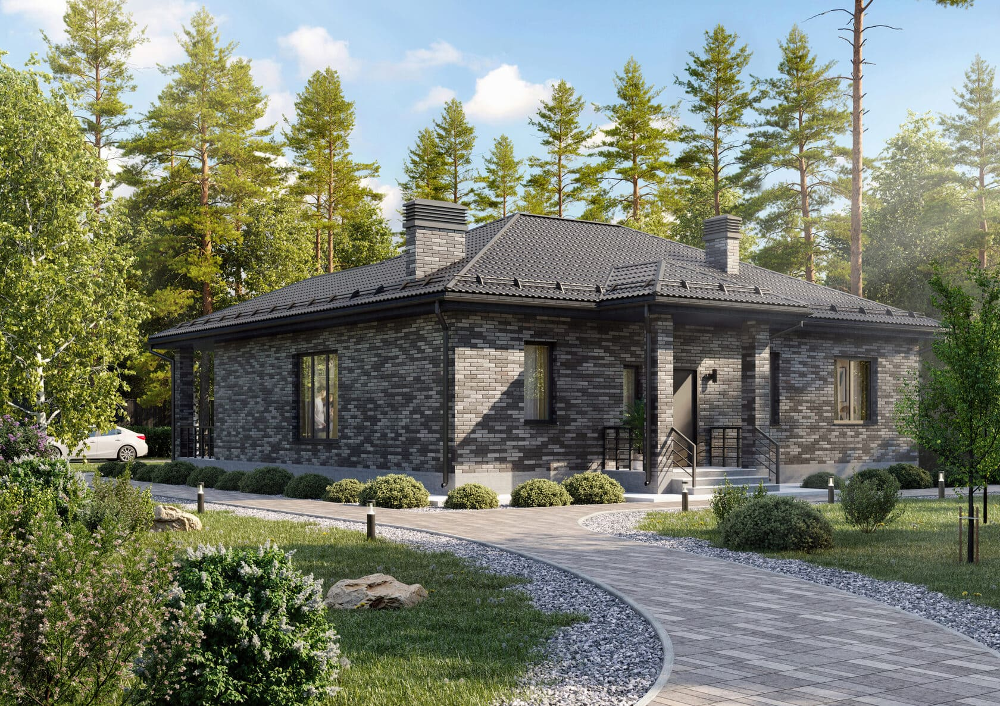
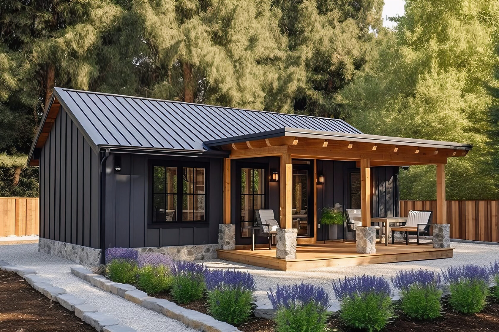

CENTROOMSTROY · Казань
Ваш дом.
Начнём с проекта.
Строим кирпичные, каркасные и СИП-дома в Казани. Подберём проект и комплектацию под ваши планы.
Посмотреть домаПРИМЕРЫ РЕШЕНИЙ
Выберите дом,
который вам близок.
В каталоге представлены разные проекты и технологии строительства. Сравните архитектуру и планировки, а комплектацию и стоимость согласуем отдельно.

Визуализация каменного одноэтажного дома из каталога
CENTROOMSTROY · Казань
Визуализация каменного одноэтажного дома из каталога
В каталоге представлены разные проекты и технологии строительства. Сравните архитектуру и планировки, а комплектацию и стоимость согласуем отдельно.
Обсудить строительство